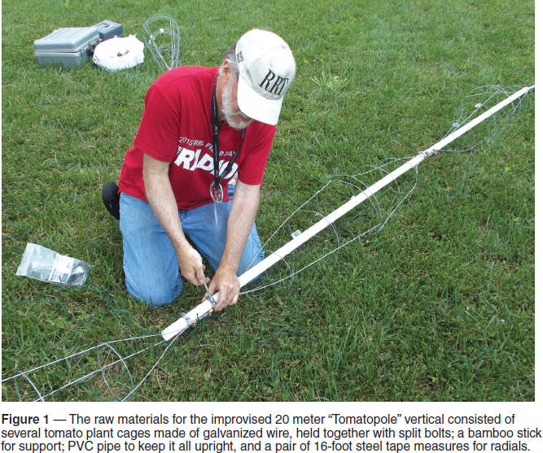
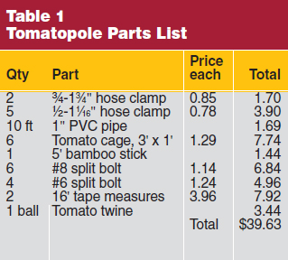
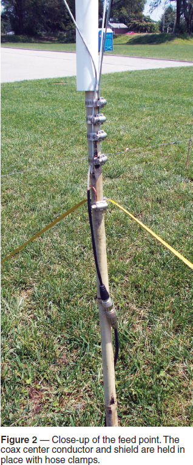
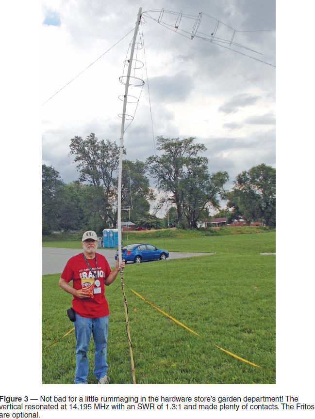

Experiment #152— Improvisation
Part of what makes ham radio (and hams) fairly unique in the world of telecommunications is its (and, presumably, our) flexibility and adaptability. Power’s out? We have batteries. Phone system crashed? We just tune in to the local repeater. Repeater got hit by lightning? We’ll switch to a better antenna and go simplex.
Improvising is built into the amateur DNA, so to speak, right out of the gate in Part 97’s Basis and Purpose (§97.1): service built on science and skill (with a good attitude). It’s useful to practice being flexible and adaptable to test the old brain cells. I got my chance on Field Day, which could very easily be renamed the “All-Amateur Improv Weekend.”
An Interesting Antenna
My challenge was self-inflicted, having volunteered at a club meeting to build an effective HF antenna on the spot during Field Day with no preparation whatsoever. Because the St Charles ARC was setting up next to the parking lot of a home improvement store, I would use only parts from the store. I also accepted the restriction to not use regular wires and insulators and stuff. It had to be different and interesting!
Walking across the parking lot, I was thinking about the type of antenna, not just materials. There were no trees on site, just lots of open space, so horizontal antennas were pretty much out of the question. It was going to have to be a ground-plane vertical. Once upon a time, a beer-can vertical would have been the obvious choice, but I don’t think we’d have been invited back and besides, thin aluminum sheet doesn’t solder well at all!1
I figured impromptu skyhooks for the low bands were impractical due to size and budget. Planning for an antenna big enough to impress without being impractical, I settled on a 20 or 15 meter vertical between 11 and 17 feet long. If it’s in that range, an impedance matcher would probably be able to handle it — that was my thinking.
Cages Are All the Rage
Entering the garden department, inspiration struck in the form of a customer with a cart full of galvanized tomato cages. Only a ham would immediately think, “Gee, those look a lot like biconical dipoles!” I guess I’ve been at this too long…
Three-foot by one-foot cages (see Figure 1) turned out to be cheap and easy, welded and galvanized just like Rohn towers, but a little lighter. With their large outside diameter (compared to an individual wire), I would get more electrical length out of them, as well. I’d need somewhere between three and six cages for the bands I was targeting.

With eight cages in the cart (after Field Day, they were going in the garden!), I imagined my creation stretching into the sky. How was I was going to hold it off the ground? Again, aimless wandering in the garden department turned to be the key — I found a 5-foot bamboo stick, sturdy, and lightweight.
My attention turned next to attaching the cages together. Soldering, splicing, or wrapping was out, so I considered clamping. Lately, I’ve grown enamored of using split-bolt connectors to hold anything together from ground wires to clotheslines — cheap, weather-tolerant, sturdy, and like the tomato cages, reusable at home. It would be easy to use little clamps to hold the cages together at their large circle ends, and bigger ones to clamp all of the stick-in-the-ground wires together in a sort of bow-tie configuration.
The antenna design was rapidly “taking shape,” so to speak. A few hose clamps later, another swing by the garden department for some “tomato twine,” then over to the tool aisle for a pair of tape measure radials as inspired by a recent QST article.2 It was showtime!
All went well — bolts bolted and clamps clamped. Soon, six cages were attached to each other and to the bamboo stick, ready for the coax pigtails. But my estimate of the final assembly’s rigidity was, shall we say, a bit optimistic. “Large fat noodle” more or less describes the problem. I quickly discarded the notion of using a lot of guying twine in favor of adding a central strengthening element. Back to the store.
By happy chance, the plumbing department was right next to the entrance, with racks of hard-to-miss 10-foot lengths of spotless white pipe. Cheaper than a 12-foot fir closet pole, too! Another bag of hose clamps and I went back to work with the pipe slipping over the bamboo to secure the base.
This time the antenna held itself together long enough to reach vertical and have the guy twine attached to rebar stakes. Tape measures were extended to their full and majestic 16 feet of safety yellow. Success! Oops, the top section decided to turn into a weather vane and bent over 90 degrees. No problem, it’s an inverted L! Plus, it was visually striking, satisfying that oh-so-important aesthetic requirement — visitors (and there were lots) loved it! I have christened it the “Tomatopole” and provided a full parts list in Table 1.

The coax was attached and SWR was swept. In between transmissions by the other stations, a simply astounding 1.3:1 was observed at 14.195 MHz! What a stroke of (undeserved) luck! And yes, with 100 W, it held a CQ frequency and made contacts all across the US, even attracting a caller from Europe.


Three-Tool Hams
This column isn’t a construction template. Don’t you dare make a copy of this antenna! Go out and make one up yourself — improvise! The ability to combine radio know-how (the science), organizational discipline (the service), and operating ability (the skill) is what sets Amateur Radio apart from other unlicensed services and makes us valuable as volunteers (and occupiers of prime wireless real estate). If our stuff breaks or isn’t available, we can make new stuff because we understand how it works. Why not stress improvisation in your exercises and drills to make every member of your team a “three-tool ham?”
Puzzled Out
The answer to last month’s frequency-finding fazer lies in the properties of numbers and a clue about carrying.2 First, break the fundamental frequency value into a pair of three-digit numbers: XXX and YYY (for MHz and kHz). That can be shortened to XY where X = MHz and Y = kHz. The three-digit format stays the same when XXX and YYY are swapped to become YX, so X and Y can have values from 0 to 999. We know the second harmonic’s frequency is 2X (MHz) + 2Y (kHz). It is also YX – 5.
The only thing we don’t know is whether multiplying Y by 2 to get the second harmonic causes a 1 MHz carry from the kHz to the MHz. If Y is 0 to 499 there will be no carry and 2X = Y (after swapping to reverse the MHz and kHz). If Y is 500 to 999, there will be a carry and 2X + 1 = Y. How can we tell and solve the problem?
If there is no carry, 2X = Y and 2Y = X – 5. If there is a carry, we have to account for the extra megahertz by changing the equations to 2X + 1 = Y and 2Y – 1000 = X – 5. Solving the first pair of equations results in a value for X of –5/3, clearly not correct. The second pair, however, results in a value of X of 331, so Y must be 2X + 1 = 663, and — voila! — the original fundamental frequency given for the schedule was 331.663 MHz!
Notes
1Czerwinski, W. Pete, W2JTJ, “Budget 7-Mc. Vertical Antenna,” Nov 1955, QST, pp 26 – 27.
2Thibodeaux, Glen, KF5FNP, “A Tape Measure Vertical Antenna,” Aug 2014, QST, p 33.
3M. Gardner, “Mathematical Games,” Scientific American, May 1959, pp 164 – 174.